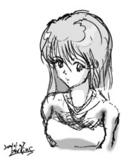

今天看到一個易利信的廣告，有一個人在辦公室內，還有成千上萬個『自己』， 那廣告很好玩咧。他把其它的自己Fire掉了。:P 
一時興起，想畫點東西。當然，畫技還是和以前一樣地爛。不過倒有個好玩的地方： 以前是用掃描器掃，現在用數位相機對準後一拍就出來了，真夠方便。
鉛筆是很奇怪的東東。用它描多次可以修整自己想要的形狀， 當然據說也有不用打稿的高手。奇怪的地方在於：眼睛看不覺得淡的鉛筆稿， 一進電腦就會覺得淡得要命。當然我除了鉛筆外也沒別的東西可用， 所以啊，上墨線不管是在現實中或者是在電腦中對我來說都是個神秘的事情， 搞不懂別人是怎麼作到的。:P